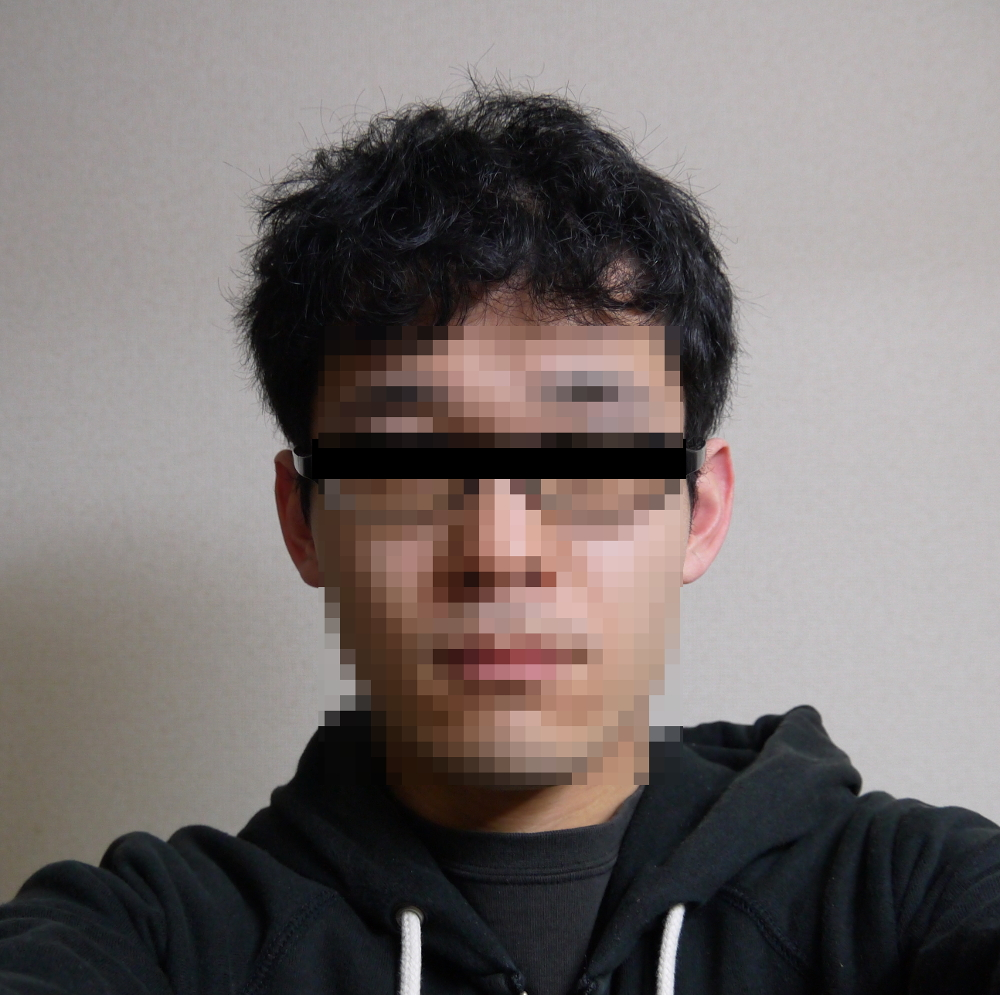
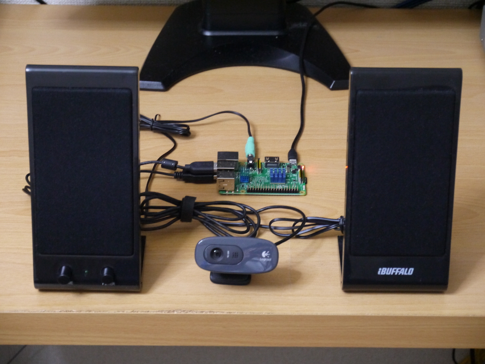
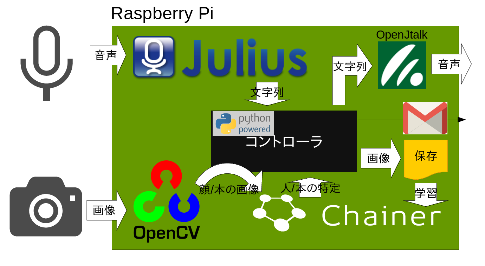
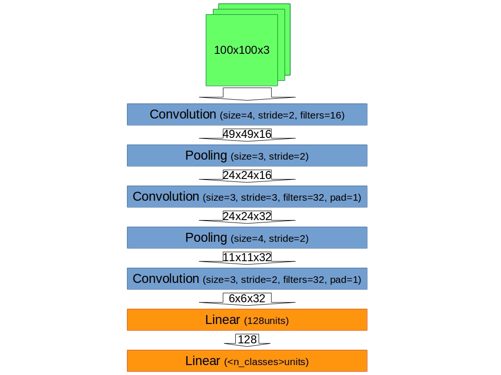
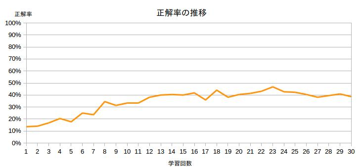
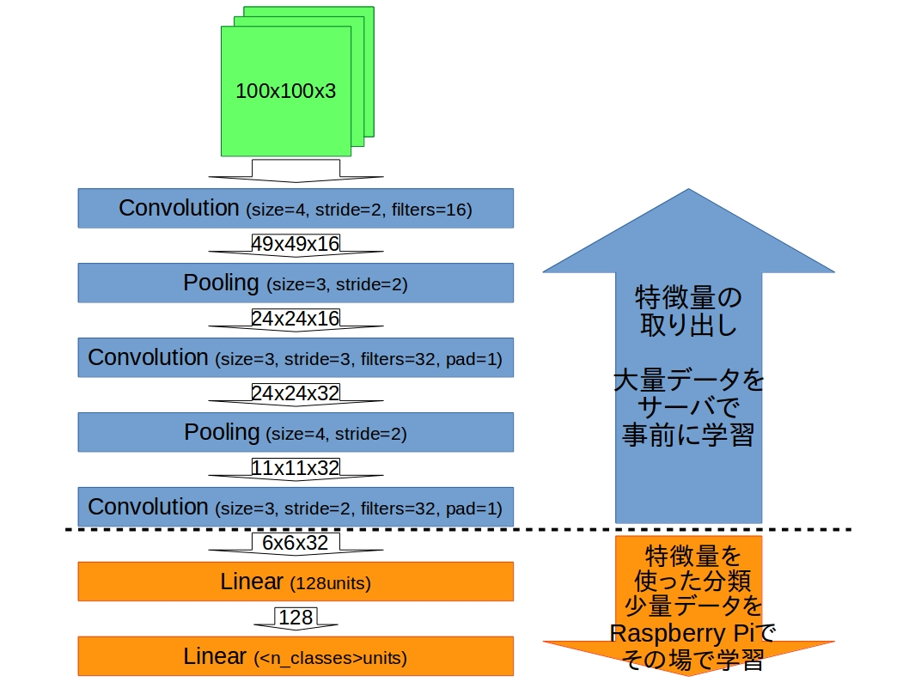
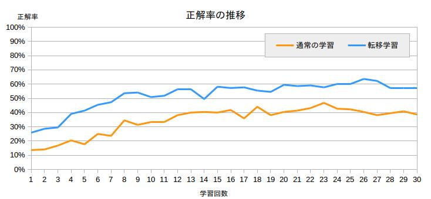
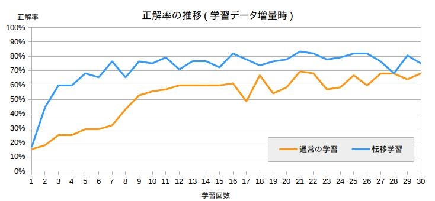
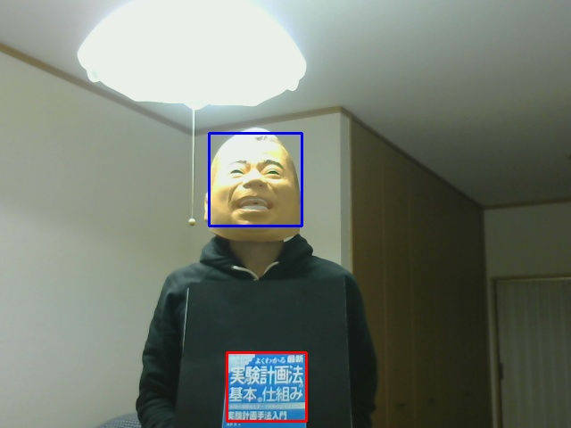

IoT司書育成 中間報告
IoT司書育成
中間報告
突然ですが、我が家には
2人の住人がいます
読書が趣味の佐藤さん
読書が趣味の田中さん

本の管理のために司書を雇いました

司書の働きぶりをご覧ください
こんなこともしてくれます
写真を撮って送ってくれる
こんなこともしてくれます
天気予報を教えてくれる
司書の中身
Raspberry Pi + オープンソースのソフトウェア群

司書の中身のポイント
ネットワークを使うのは、
メールを送る時・天気予報を調べる時だけ
音声認識・画像認識・音声出力は全て内部で完結
特に、人と本の識別に使っているディープラーニングが
学習も含めてRaspberry Pi上で動作!
通常のIoT + ディープラーニング
学習は全部サーバ側に任せ、サーバで
複雑なモデルに
大量の訓練データを与え
大量の計算機を使って
長時間学習する
ことで、高い精度を目指す
IoT機器はデータ取得に専念するか、
サーバで学習した結果を持ってきて使うだけ
今回のIoT + ディープラーニング
サーバ不要にしたい! でも賢い司書が欲しい!! ので
比較的簡単なモデルに
少量の写真を与え
Raspberry Pi 1台で
数分だけ学習する
これで人・本を実用的に判別できる精度を目指す
人・本の判別に使用したモデル
シンプルで計算量が少ないモデルを用意

モデルの性能評価
そっくりさん 2人 x 4組 = 8人 の顔写真を292枚用意
72枚だけ学習に使う
学習後に、残り220枚で
写真から人をどれだけ当てられるか試験
試験結果
最高正解率48.6%。厳しい。。

そこで転移学習
特徴量の取り出し方だけを事前にサーバで学習させ、
特徴量を使った人・本の判別はRaspberry Piで学習する
120人16576枚の訓練データを作成
サーバで200epoch学習させる(2日半くらい)
学習済みモデルをRaspberry Piに持ってくる
畳み込み層の重みを固定し、全結合層だけ
識別したい人の画像で、再学習
人・本の判別に使用したモデル
特徴量取り出しだけ事前に学習する

転移学習の成果
最高正解率 48.6% => 63.6%

なお、学習データを220枚に増やすと
転移学習により
最高正解率向上 70.8% => 83.3%
少ない学習回数で正解率が上昇

学習にかかる時間
約50秒/人 x 人数分の時間
追加登録が1人でも全員分再学習の必要あり
速くはないが、50人分でも昼休み中には学習が終わると考えると許容かな。。
次の課題
本の領域を切り出す処理(ディープラーニングの前段階)
の精度が悪く、遺影スタイルが必要なことが多い問題

ソースコード
GitHubで公開しています
nknytk / libran
図書館司書の中身
nknytk / face-classifier-cnn
本・顔の認識に使ったモデルの定義
学習データ作成補助ツール
性能検証詳細レポート